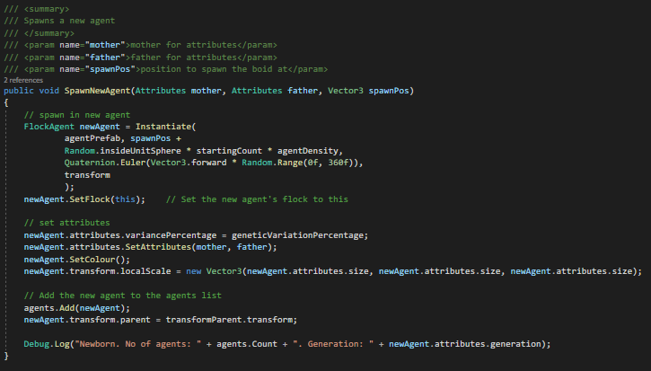
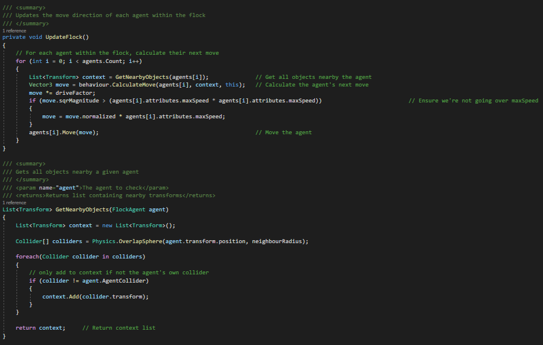
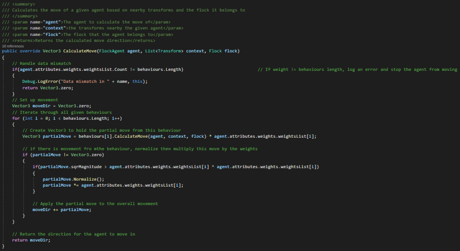
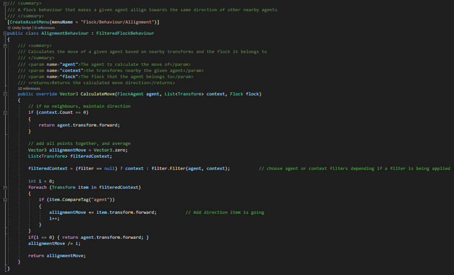
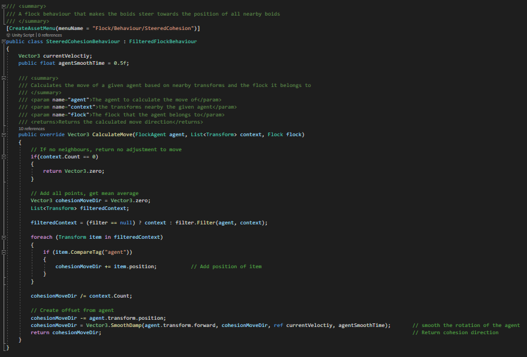
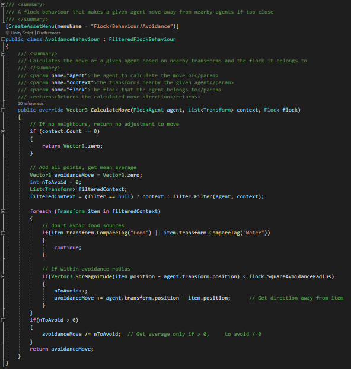
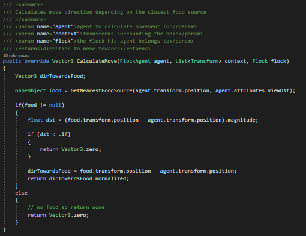
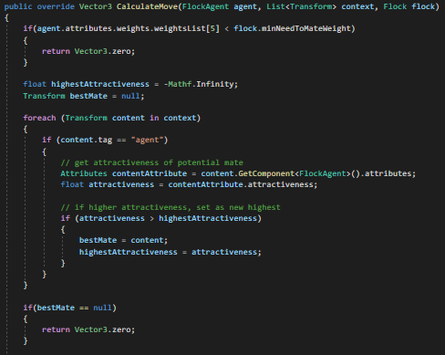
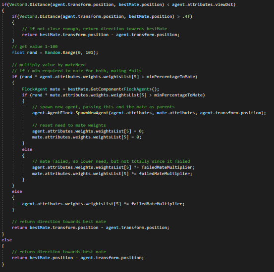

Overview
This project was my second year solo project, in which I decided to develop an ecosystem simulation that uses boid agents and behaviours. Boids is an artificial intelligence behaviour that simulates the flocking behaviour of birds. The agents behave how boids typically behave, however they have other behaviours worked into them, for example the need to eat, thirst, need to mate, and more. The main intent of this project was to see how well boid agents could work and function within an ecosystem, provided the behaviours had been added for them to do this.
The assignment for this project was to develop any type of artificial intelligence we wanted, in which I chose to take the AI behaviour of boids and add more complex behaviours to them. This meant creating numerous behaviour scripts, a main behaviour handler, and more, alongside ensuring to improve the efficiency of the boid agents, since boids themselves can be very taxing on a computer's resources. My main priority was creating the behaviours so that the boids could reproduce, eat to survive, repopulate, and continue to thrive in a given environment.
Example Systems + Scripts
The main script, Flock.cs, handled spawning in new flock agents and triggering the move in all boids in the flock.
SpawnNewAgent is a method in which instantiates a new boid agent, ensuring its attributes and behaviours and set correctly. It begins by instantiating a new agent using the agent prefab randomly within a sphere, making sure the agent knows which flock it belongs to. The agent's attributes are then set using mother and father attribute sets. This is followed by adding this agent to the agents list so we can continue to monitor and update it.
The UpdateFlock method is responsible for updating the move of every agent in the agents list, ensuring this move is kept within the max speed constraints. To calulate this move, the boid agents get all objects within a given radius and react to them in different ways depending on their different behaviours and their weights.
Here are the original behaviours that typical boid agents possess. This includes: allignment, cohesion, avoidance, and a composite behaviour to combine these different behaviours into one.
Below is the composite behaviour. This takes a boid agent and loops through each behaviour in a given behaviour list and calculates a move direction based on these and their weights, ensuring to return the move direction to where it was called.
Below is the allignment behaviour. This behaviour makes a given agent allign towards the average direction of all nearby agents, ignoring all other objects that aren't boid agents. This alignment move is then returned to where it was called.
Below is the cohesion behaviour. This behaviour is responsible for making the boids steer towards all nearby boids, ignoring objects that aren't boid agents. The behaviour calculates the average move position of all nearby agents, returning this cohesion move value.
Below is the avoidance behaviour. This behaviour makes it so the agent moves away from all nearby objects when getting too close. It gets the nearby object context list and gets the average direction away from all of these objects to avoid them, returning this avoidance movement to where it was called.
This concludes the original boid behaviours and how I have implemented them into my own agents.
To create a environmental simulation for the boids, I had to ensure I was simulating the need for a food source, the need to mate, and other natural needs and requirements.
Find Food Behaviour
Below is the behaviour responsible for finding food and returning the direction towards it. Firstly, it gets the nearest food source through calling the method GetNearestFoodSource, which is a simple method which calculates which food source within view distance is closest to this agent, following this by returning the direction towards this food source or returning no direction due to no nearby food sources. This behaviour was vital in this system since without food the agents would just die out due to hunger.
Find Mate Behaviour
Below is the first half of the find mate behaviour. This behaviour is responsible for finding the nearest best mate and attempting to mate with them, returning the direction towards them if too far. Firstly, the agent gets the context list and searches for the mate with the highest attractiveness attribute. This was a vital part in the system, since they should prefer mates with better attributes and higher chances to live than those that are more likely to die quickly. In this first half, we get this best mate and keep them as context.
In the second half, the script first checks whether the agent is close enough to attempt to mate with the other agent. Then it runs through a random number generator to see if the mating was successful or not, in which if it was, a new agent will be spawned with these two agents as the parents and their need to mate weight is reset, otherwise their need to mate would be lowered by a multiplier. And finally, the direction towards this best mate would be returned the where this was called.
What I learnt from this project
This project and module helped me develop my understanding of the different ways artificial intelligence can be created for different jobs, and the industry-standard practices for implementing different AI behaviours and features. From my work specifically, I learnt how to take a basic AI and implement new, more complex, behaviours, whilst also ensuring the system makes sense and is efficient enough to run effectively as possible.